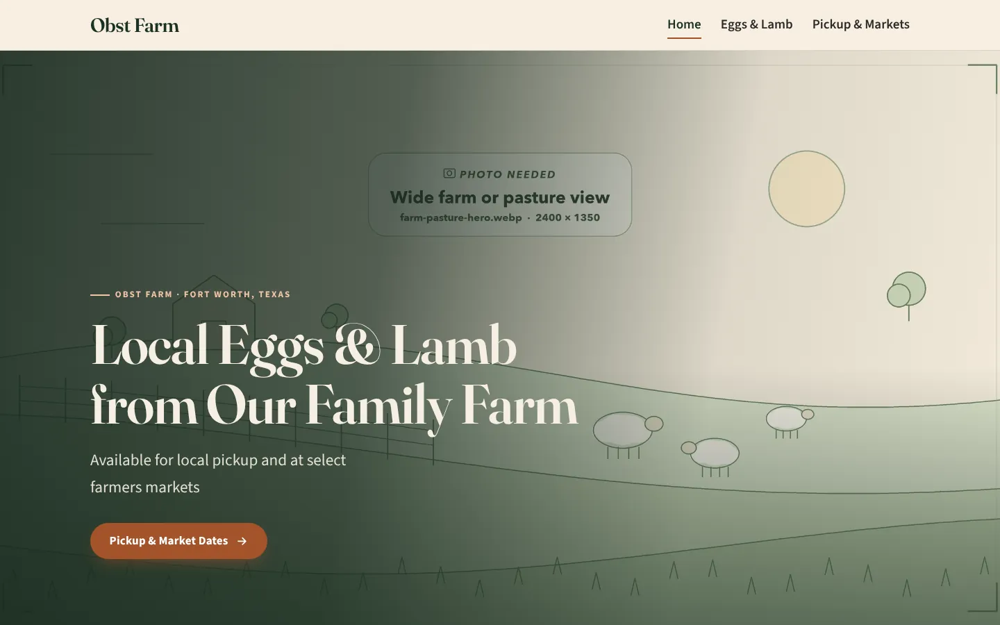
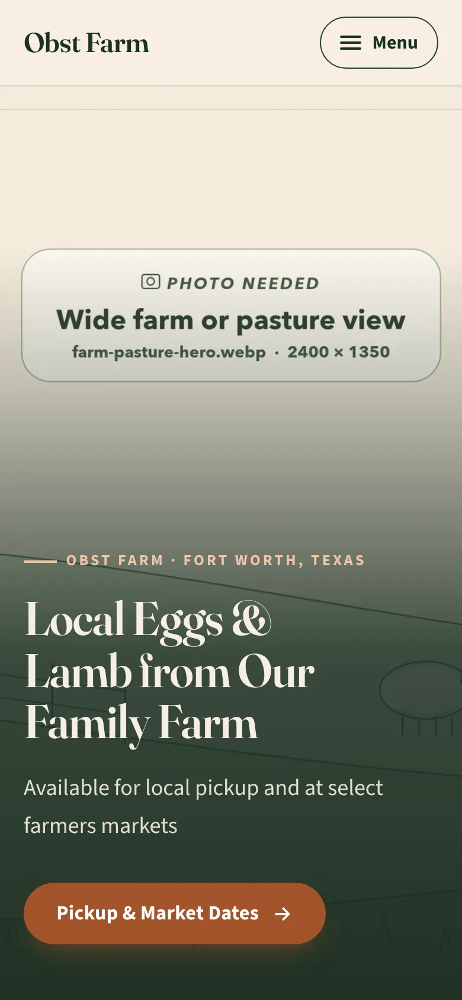
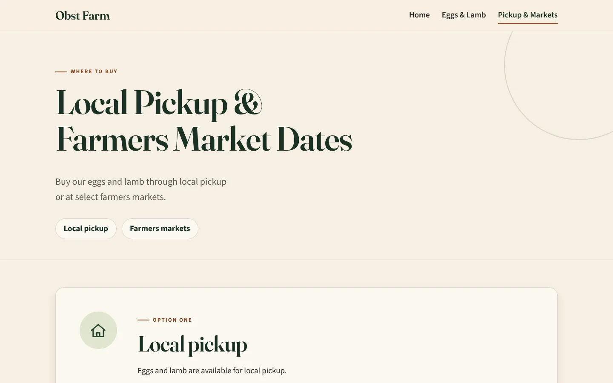

Obst Farm
A family farm website that answers the first two questions
Obst Farm is Daniel Obst's family farm in Fort Worth, selling eggs and lamb through local pickup and select farmers markets. Customers want to know two things: what do you sell, and where do I get it? The site answers both on the first screen.
- Industry
- Family farm: eggs and lamb
- Location
- Fort Worth, Texas
- Status
- PreviewPreview draft with illustrated photo placeholders until the family's own photographs are ready.
- What I did
- Messaging, Custom design, Photography planning

The business goal
A small farm doesn't need a complicated website. It needs people nearby to know the farm exists, trust that the family behind it cares for the animals, and find out when and where to buy.
What I built
- The homepage headline, "Local Eggs & Lamb from Our Family Farm," says what's for sale and who's selling it. The button underneath goes straight to pickup and market dates.
- A "Meet Daniel Obst" section explains that the family helps care for the animals: "When you buy our eggs and lamb, you are buying from the family that looks after them."
- Pickup & Markets lays out the two ways to buy, side by side.
Why these choices
Pasture green, cream, and a clay accent, with a warm serif headline. It feels like the farm without leaning on clichés like barn-red and gingham.
Illustrated placeholders instead of stock photos. Stock photos of someone else's farm would undercut the whole point, which is that this is a real family. Until the family's own photos are ready, each image slot shows a calm illustration with a "Photo needed" label, the exact size, and a description of the shot. When a photo is saved under the same filename, it replaces the placeholder without any layout changes.
Family photos only with approval. The design works with or without a family photo, so the family decides what to share.


Where it stands
This is a preview draft. The headline is the approved working version, and photography is waiting on the family's own pictures.